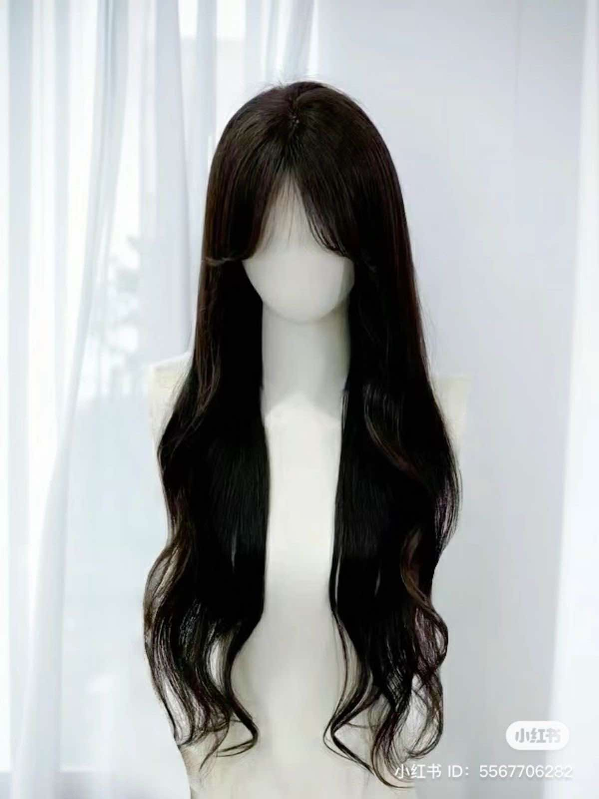

ทรงผม
โครงหน้าแบบเราเหมาะกับผมทรงไหนดี?
รูปหน้าไข่

ทรงผมที่แนะนำ

1)ทรงWolf cut
เหมาะกับทุกเพศทุกวัยทุกสภาพเส้นผมแต่จะเหมาะกับคนที่มีผมเส้นหนาปานกลางถึงหนามากเป็นพิเศษเพราะจะช่วยให้ผมดูมีวอลลุ่มและทรงผมจะออกมาสวยงาม

2)ทรง Soft Mullet
ทรงผมสไตล์วินเทจที่นอกจากจะตัดออกมาให้ลุคเท่ ๆ ดูแนวแล้ว ยังเหมาะกับสาวผมบางอีกด้วย ให้ความรู้สึกแบบสาวญี่ปุ่นเบา ๆ สวยเก๋ไม่เหมือนใคร

3)ทรงผมยาว
หน้าม้าซีทรูสำหรับผู้หญิง จะเป็นทรงที่ด้านหลังปล่อยยาวสวย แล้วตัดหน้าม้าแบบบางๆ ให้หน้าดูมีมิติ แต่ก็ยังดูเบา และไม่ได้ปิดหน้าจนดูทึบเกินไป โดยทรงผมนี้เหมาะสำหรับผู้หญิงที่มีรูปหน้ากลมและมีแก้ม เพราะหน้าม้าซีทรูจะช่วยพรางแก้ม และทำให้ใบหน้าดูเรียวขึ้นได้ พร้อมยังให้ลุคที่ดูสวยเป็นธรรมชาติ ไม่ดูอึดอัดจากหน้าม้าหนาๆ

4)ทรงผมอันเดอร์คัต
เพราะว่าเป็นทรงที่ช่วยเพิ่มความหนาให้กับเส้นผมได้มากขึ้น ซึ่งเขาจะทำการเล็มด้านข้างและด้านหลังศีรษะให้สั้น และด้านบนปล่อยให้ยาวแน่นอนว่าทำให้จัดทรงผมได้ง่าย
5)ทรง Mullet
ผมทรงนี้เหมาะกับหนุ่มสายติสต์ ทรงผมชายเท่ๆ เป็นทรงผมกึ่งทางการที่ทุกคนสามารถตัดได้ หากใครชอบไว้ผมยาวแบบเซอร์ๆ ก็ต้องแนะนำว่า Mullet ทรงนี้เหมาะกับทุกรูปหน้าและไลฟ์สไตล์ของหนุ่มสายชิลอย่างมาก